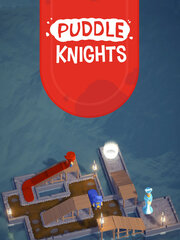

Puddle Knights
Details
|  | |
| Playtime | 46m 0s |
| Last Activity | 11/29/2021 2:32:38 |
| Added | 8/19/2023 14:50:25 |
| Modified | 8/19/2023 15:23:11 |
| Completion Status | Played |
| Library | Steam |
| Source | Steam |
| Platform | PC (Windows) |
| Release Date | 3/3/2020 |
| Community Score | 70 |
| Critic Score | 80 |
| User Score | |
| Genre | Indie Puzzle Strategy |
| Developer | Lockpickle |
| Publisher | Lockpickle |
| Feature | Single Player |
| Links | Official Steam Twitch |
| Tag | |
Description
"Puddle Knights retroactively caused me to create the games I've made"
-- Arvi Teikari, developer of Baba Is You
Puddle Knights is a puzzle game about wits, chivalry and mud. In the game, valiant knights of varying cape lengths assist Ladies and Bishops across mud formations that threaten to dirty their precious hems. As the motto of the Order of the Puddle Knights says: a badly designed sanitation system gives ample opportunity for heroism!

As the player, you will coordinate the movement of both the Knights and their less mud-resistant superiors with the goal of escorting them to their designated exit. To achieve this noble purpose, no sacrifice is too great: capes will tear and heads will be stepped on. However, it is your head that will be doing most of the heavy lifting in these puddle puzzles!

Key features:

Time to protect some dignity!
-- Arvi Teikari, developer of Baba Is You
Puddle Knights is a puzzle game about wits, chivalry and mud. In the game, valiant knights of varying cape lengths assist Ladies and Bishops across mud formations that threaten to dirty their precious hems. As the motto of the Order of the Puddle Knights says: a badly designed sanitation system gives ample opportunity for heroism!
As the player, you will coordinate the movement of both the Knights and their less mud-resistant superiors with the goal of escorting them to their designated exit. To achieve this noble purpose, no sacrifice is too great: capes will tear and heads will be stepped on. However, it is your head that will be doing most of the heavy lifting in these puddle puzzles!
Key features:
- 100+ head-scratching levels of increasing difficulty
- Step on heads
- Tear up capes, hold down drawbridges and perform other inventive tactical maneuvers
- A fresh take on logic puzzles: no pressure plates, keys to collect or boxes to push
- Mistake-making and experimentation enabled by Undo and Reset functions
- No rush: all the time in the world to think and analyze
Time to protect some dignity!